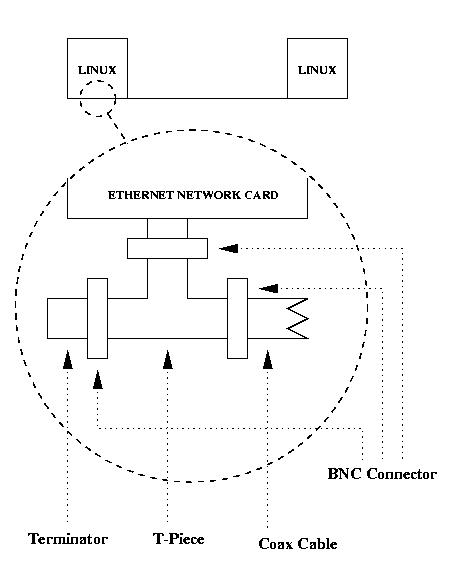

Getting Linux Connected, using Ethernet and TCP/IP
A 2 Node Connection - 10Base2

You will need the following components to connect the two Linux machines together using 10Base2 :
2 Ethernet network cards with a 10Base2 (Thin Ethernet) Interface which are supported by Linux.
2 10Base2 T-Pieces - usually 1 is supplied with an Ethernet network card.
1 piece of 10Base2 (RG-58) coaxial cable with BNC connectors on both end.
2 10Base2 50 Ohm Terminators - these are connected to each end of the cable, as per the diagram.
The advantages of this method are as follows :
- Uses standard 10Base2 components which are fairly readily available - even Dick Smith carry them, however Dick Smith tend to be fairly expensive. Cable Assembly or Data Cabling companies should also be able to supply/make all the required components.
- In the corporate world, 10Base2 networking is being replaced - you may be able to pick up very cheap (and if you are lucky - free) 10Base2 network cards, cable, terminators etc.
- You can connect up to 30 devices (eg. PCs) to your 185 meter segment of 10Base2 cable.
The disadvantages of this method are as follows :
- It is easy to loose the bits ie, the Terminators, T-Pieces etc.
- It can be very hard to find the fault if you have a faulty cable, T-Piece or terminator.
- To physically add a node from the network, you have to physically break the network, disrupting networking to all users on the LAN.
- You can remove a node from the network without physically breaking the segment, but you can only unplug it from the T-Piece; you cannot remove the T-Piece itself.
[Previous Page]
|
[Next Page]
|
[Start of Current Topic]
|
[Previous Topic]
|
[Next Topic]
LinuxSA - http://www.linuxsa.org.au
Prepared by Mark Smith
marks@senet.com.au
Fri Feb 20 13:28:03 CST 1998